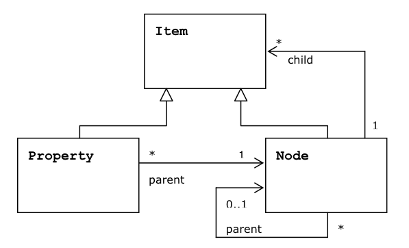

Because nodes and properties have some common functionality, common methods are defined in the interface Item, to which the sub-interfaces Node and Property add further methods. The following diagram summarizes the basic relationships between the interfaces.
This UML diagram indicates that Property and Node are subinterfaces of Item. A single Property has one and only one parent Node. A Node can have either zero parents (only if it is the root node) or one parent. A Node can have any number of child Item objects (i.e., either Property or Node objects).